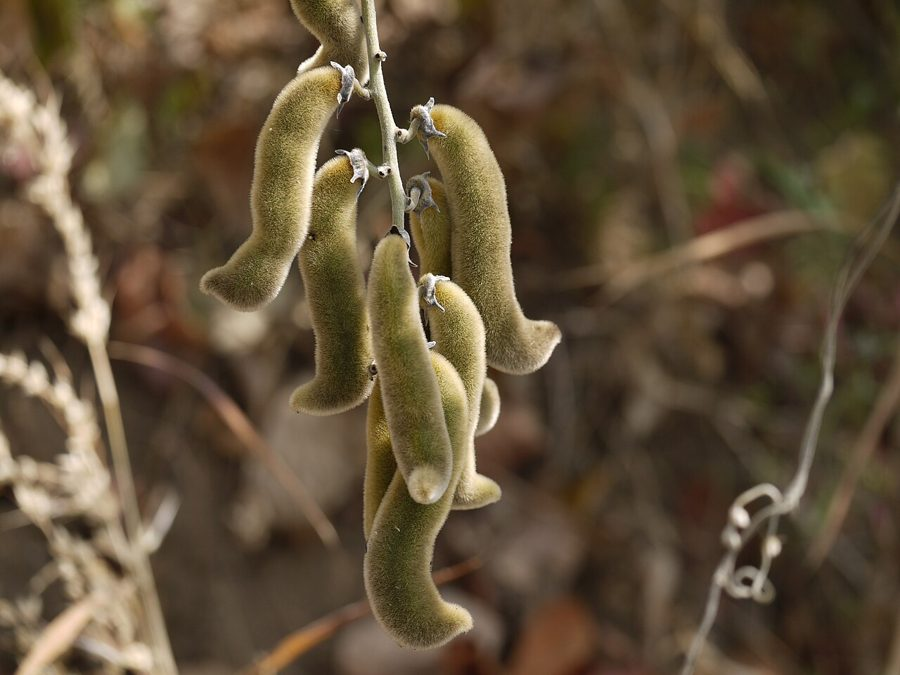

केवाँचVelvet Bean
Mucuna pruriens · Fabaceae · FLR-0213

- Scientific name वैज्ञानिक नाम
- Mucuna pruriens (L.) DC.
- Family कुल
- Fabaceae
- Hindi हिंदी
- केवाँच / कौंच
- Local names स्थानीय नाम
- kewanch, kewach, kaunch, konch, velvet bean, cowhage
- Status here यहाँ की स्थिति
- native
- Movement आवागमन
- Resident, here all year
- IUCN IUCN
- not evaluated
- Review समीक्षा
- audited and independently read
When to look कब देखें
Expected mainly in May, June, July, August, September, October, November, December, January. मुख्यतः मई, जून, जुलाई, अगस्त, सितंबर, अक्टूबर, नवंबर, दिसंबर, जनवरी में अपेक्षित।
Uses and possibilities उपयोग और संभावनाएँ
“Traditional medicine” means a documented traditional use, not a claim that it works. Nothing on this page is medical advice.
Drawn from the documented uses in the profile below, where each is labelled traditional, current or a research lead. All uses →
Tell it apart from इनसे अलग पहचानें
केवाँच / Velvet Bean
Mucuna pruriens (L.) DC. — Fabaceae
केवाँच (कौंच, कोइच, गज़ी) — एक बेल जो बहुत खतरनाक है और भारत की लगभग हर जगह पाई जाती है। पॉड (फली) पर बहुत बारीक़, रूओं जैसे बाल होते हैं जो त्वचा में चुभते हैं और तेज़ खुजली पैदा करते हैं — इतनी तीव्र कि लोग पागल भी हो जाते हैं। हाथ, पैर, चेहरा — कहीं भी लग जाएँ तो जलन और खुजली घंटों तक रहती है। तथापि, आयुर्वेद में इसे एक महत्वपूर्ण औषधि माना जाता है, और इसके बीजों का तेल परकिनसन रोग के लिए आधुनिक अनुसंधान में भी जाँचा जा रहा है। पारंपरिक दवाइयों में इसे स्नायु और हड्डी को मज़बूत करने वाली, पुरुष-शक्ति बढ़ाने वाली, और नपुंसकता का इलाज करने वाली दवाई के रूप में प्रयोग किया जाता है।
Quick Identification त्वरित पहचान
| Feature | Description |
|---|---|
| Stem | Robust, angular, densely hairy, climbing vine, reaching 3–5 m or more |
| Leaves | Alternate, trifoliate, leaflets 8–15 cm, oblong, hairy, terminal leaflet larger |
| Flowers | Purple or violet, sometimes white, 2–2.5 cm, in axillary racemes |
| Pods | Linear, 4–8 cm long, densely covered with fine hairs (urticating hairs) that cause intense itching |
| Seeds | 1–4 per pod, large, 1.5–2 cm, black or mottled, very hard |
| Hairs | Pod hairs are the hazard: microscopic, easily detached, cause chemical irritation |
Field tip: Look for a robust climbing bean with purple flowers and distinctive fuzzy pods covered in fine, irritating hairs. HAZARD: Pod hairs cause intense itching on skin contact — do not touch the pods bare-handed. The itching is severe and can persist for hours. Wear gloves when handling. The itch is caused by the urticating hairs, not toxins in the seed itself.
Morphology आकारिकी
| Measurement | Range |
|---|---|
| Vine length | 3–5 m or more |
| Leaf length (petiole + blade) | 20–30 cm |
| Leaflet length | 8–15 cm |
| Flower length | 2–2.5 cm |
| Pod length | 4–8 cm |
| Pod width | 1–1.5 cm |
| Seed size | 1.5–2 cm |
| Pod hair length | 0.5–1.5 mm (irritating) |
Stems: Robust, angular, densely covered with long spreading hairs; climbing, twining around supports; woody at base in perennial plants.
Leaves: Alternate, trifoliate; leaflets oblong-elliptic, 8–15 cm × 4–8 cm; hairy on both surfaces; margin entire; apex acute to acuminate; base rounded; terminal leaflet slightly larger than laterals.
Inflorescence: Axillary racemes; 15–30 cm long; flowers clustered.
Flowers: Large, 2–2.5 cm; calyx tubular; corolla bilabiate (two-lipped); standard petal reflexed; wings and keel united; colour purple, violet, or sometimes white; stamens 10, 9 united + 1 free (diadelphous); pollen sticky.
Pod (legume): Linear, 4–8 cm × 1–1.5 cm, slightly flattened, densely covered with fine, microscopic, urticating (stinging) hairs that easily detach and penetrate skin, causing intense itching; contains 1–4 large seeds; pods split explosively at maturity.
Seeds: Large, 1.5–2 cm long, ovoid, black or mottled brown and black, extremely hard seed coat; rich in L-dopa (levodopa), a precursor to the neurotransmitter dopamine.
हिंदी: मोटी बेल, बैंगनी फूल, खुरदरी फलियाँ। फली के बाल खतरनाक — खुजली पैदा करते हैं। बीज काले, बहुत कड़े।
Behaviour & Ecology व्यवहार और पारिस्थितिकी
Mucuna pruriens is a tropical climbing legume, typically a warm-season annual or short-lived perennial. It germinates after monsoon rains and grows vigorously, reaching 3–5 m or more in a single season. The plant thrives on rich, well-drained soils and in tropical climates. It is drought-tolerant once established.
The flowers are visited by large bees and butterflies; the flowers are pollinated by insects adapted to the complex flower structure. The plant fixes atmospheric nitrogen through root nodules (Rhizobium symbiosis), enriching the soil.
Pod-hair hazard — critical: The pod surface is covered with microscopic urticating hairs (0.5–1.5 mm long) that easily detach upon contact with skin. The hairs are coated with a proteinaceous irritant compound; on contact with skin, they penetrate the epidermis and cause release of histamine and other inflammatory mediators, resulting in intense, burning itching. The itching can persist for 1–2 hours or longer, and scratching worsens the irritation. The irritation is not allergic; it is a purely mechanical-chemical irritation. Young pods are most heavily covered with hairs; mature, ripened pods have fewer, partially shed hairs.
Seeds are dispersed by explosive pod dehiscence; the pods split suddenly when dry, flinging seeds up to 5 m away. No toxicity is associated with seed handling, though some individuals report skin irritation from seed coat contact. The itching from pods is the major hazard.
हिंदी: मजबूत बेल, नाइट्रोजन बढ़ाती है। फली के बाल से तेज़ खुजली — घंटों रह सकती है। बीज के चारों ओर ये बाल नहीं, इसलिए बीज सुरक्षित है।
Life Cycle / Phenology जीवन चक्र
| Month / Season | Event |
|---|---|
| May–July | Seed germination; seedling emergence with monsoon onset; rapid growth |
| June–August | Vegetative growth; vine establishment and climbing |
| August–September | Flower bud formation; flower initiation |
| September–October | Peak flowering; dense racemes of purple flowers |
| October–November | Fruit (pod) development and growth; pods densely hairy — itching hazard |
| November–December | Pod maturation and ripening; explosive seed dispersal begins |
| December–January | Plant decline in cool season; seed bank formation |
| February onwards | Dormancy and plant death; seeds persist in soil |
हिंदी: जून-जुलाई में उगता है, अगस्त-सितंबर में फूल, अक्टूबर-नवंबर में फलियाँ (खुजली वाली), दिसंबर में बीज गिरते हैं।
Agricultural / Human Relevance कृषि और मानव संबंध
Pod-hair itching hazard — immediate caution: The pods of Mucuna pruriens bear a covering of fine urticating hairs that cause intense, burning itching upon skin contact. The hairs are mechanically irritating and coated with an irritant proteinaceous compound. Upon contact:
- Itching begins within minutes, reaching peak intensity in 30–60 minutes
- Severity ranges from mild irritation to severe, nearly unbearable itching
- Itching can persist for 1–2 hours or longer
- Scratching worsens irritation and can cause secondary infection
- Children and individuals with sensitive skin are most affected
Prevention and management:
- Do not touch pod-bearing plants bare-handed
- Wear long sleeves, trousers, and gloves when harvesting or handling pods
- Warn children of the hazard; educate them not to touch or play with the pods
- If contact occurs, wash the area immediately with soap and cool water (not hot); ice packs may help reduce itching
- Calamine lotion or antihistamine cream may provide symptomatic relief
- In severe cases, seek medical attention
Medicinal use — Ayurvedic and traditional: The seeds (not pods) are used extensively in traditional medicine. The seed contains significant L-dopa (levodopa), a natural precursor to dopamine, which is the active therapeutic compound. Traditional uses include:
- Prepared as a powder (
churna) for treating male sexual dysfunction and infertility (Kapha aggravation) - Seed oil or decoction used for strengthening muscles, nerves, and reproductive tissue
- Traditional use for treating tremor and neurological conditions (recorded in older Ayurvedic texts)
- Modern research has validated the L-dopa content (a few per cent of dried seed weight in published analyses) and shown promise for Parkinson's disease management
- Plant is recorded in Charaka Samhita and Bhava Prakasha as a rasayana (rejuvenative)
No toxic effects from seed consumption are documented when properly processed (dried, roasted, and powdered). The seed coat itself does not cause itching — only the pod hairs.
Livestock use: The leaves are sometimes used as fodder for cattle and goats; they are palatable and nutritious. The seeds are not typically fed to livestock.
Expected Locally स्थानीय रूप से अपेक्षित
Not a field record. Written from published accounts for eastern Uttar Pradesh. No confirmed local sighting yet — if you have seen it, that is what the atlas needs.
अभी तक स्थानीय पुष्टि नहीं। यह विवरण प्रकाशित स्रोतों से है, किसी अवलोकन से नहीं।
Expected on hedgerows, field margins, and forest edges throughout Basti district during the warm season (May to January). The distinctive purple flowers and hairy pods are easily recognized. Warn others of the itching hazard — pod contact should be avoided. The first local record would be a photograph with date and location, sent to the atlas.
Distribution वितरण
Global range: Native to tropical Africa and Asia, particularly the Indian subcontinent; widely naturalized throughout tropical regions.
In India: Widespread throughout the Indian peninsula; common in the Indo-Gangetic plain and Deccan.
In Uttar Pradesh: Distributed in agricultural districts and semi-cultivated areas.
In Basti district / eastern UP: Expected on hedgerows and field margins; not yet confirmed by the project.
Research Questions शोध प्रश्न
Anyone can investigate these | कोई भी इन प्रश्नों की जाँच कर सकता है
- What is the severity and duration of itching caused by kewanch pod contact in different age groups (children vs. adults)? / केवाँच की फली से होने वाली खुजली कितने समय तक रहती है? — Document cases; interview affected individuals; record intensity and duration.
- How far do kewanch seeds disperse from the mother plant when pods burst explosively? — Mark plants; measure distances of fallen seeds.
- Is kewanch used traditionally in your village for any medicinal purpose, and if so, what is the preparation and indication? / आपके गाँव में केवाँच का औषधीय उपयोग होता है? — Interview healers, elders, and users; document preparation methods.
- Do livestock preferentially graze on kewanch leaves compared to nearby plants, and is the leaf nutritious? — Observe grazing; test leaf nutritional content if possible.
- How many seeds does a single mature plant produce in one season? — Count pods on 5 plants; count seeds per pod; calculate average.
Similar Species मिलती-जुलती प्रजातियाँ
| Species | How to tell apart | हिंदी | |
|---|---|---|---|
| Balloon Vine (Cardiospermum halicacabum) | Much more delicate; leaflets smaller and fern-like; flowers white; inflated fruits, not pods | बहुत पतली बेल, पंख जैसी पत्तियाँ, सफेद फूल | |
| Cajanus cajan ([[pigeon_pea\ | Pigeon Pea]]) | Pods smaller, not hairy; leaves different; taller shrub; yellow flowers | दालें चिकनी, पीले फूल, झाड़ी |
| Pointed Gourd (Trichosanthes dioica) | Leaves larger, lobed; fruits elongate-oval with stripes; not a legume | पत्तियाँ बड़ी, लबालब |
Field rule: A robust climbing legume with trifoliate leaves, large purple flowers, and distinctive pods densely covered with fine urticating hairs (causing intense itching), is kewanch. Do not touch the pods bare-handed.
Taxonomy & Classification वर्गीकरण
Original description. Originally described as Dolichos pruriens by Carl Linnaeus in 1753. Later transferred to the genus Mucuna by Adrien-Henri de Cassini in 1817. The genus name Mucuna is derived from the Tupi (South American indigenous) name for the plant; the specific epithet pruriens is Latin for "itching," referring to the irritating pod hairs.
Subspecies. Monotypic — no subspecies are currently recognised, though regional ecotypes vary in pod hairiness and seed size.
Family and order placement. Placed in the order Fabales, family Fabaceae (pea and bean family), subfamily Faboideae. The genus Mucuna contains about 35 species, primarily tropical.
Phylogenetic notes. Mucuna pruriens is sister to Mucuna cochinchinensis and related Asian species. The genus is distinct within Fabaceae in the combination of urticating pod hairs and high L-dopa content in seeds.
IUCN status rationale. Not evaluated. Widespread and abundant; not assessed for conservation status.
Photo Gallery फोटो गैलरी
No photos yet — add field photos to media/species/kewanch/ and run node scripts/sync_photos.js.
Photos needed आवश्यक फोटो
- [ ] Climbing vine with purple flowers (बेल और बैंगनी फूल)
- [ ] Purple flower close-up (फूल का क्लोज़-अप)
- [ ] Hairy pods (खुरदरी फलियाँ)
- [ ] Pod close-up showing urticating hairs (फली — बाल दिखाते)
- [ ] Large black seeds (काले बीज)
References संदर्भ
- Linnaeus, C. (1753). Species Plantarum, Vol. 2, p. 725 (as Dolichos pruriens). Laurentii Salvii, Holmiae.
- Cassini, A.H. de. (1817). In: Cuvier, F. (Ed.). Dictionnaire des Sciences Naturelles, Vol. 32, p. 436. Transfer to Mucuna. Levrault, Paris.
- Hooker, J.D. (1876). Flora of British India, Vol. 2. L. Reeve & Co., London.
- Kirtikar, K.R. & Basu, B.D. (1935). Indian Medicinal Plants, Vol. 1. Lalit Mohan Basu, Allahabad.
- Hussain, R. & Majeed, M. (2006). L-dopa concentration in seeds of Mucuna pruriens and its therapeutic applications. Fitoterapia 77: 385–391.
- GBIF Occurrence Data — Mucuna pruriens, India (2015–2026).
Source file: species/flora/climbers/kewanch.md